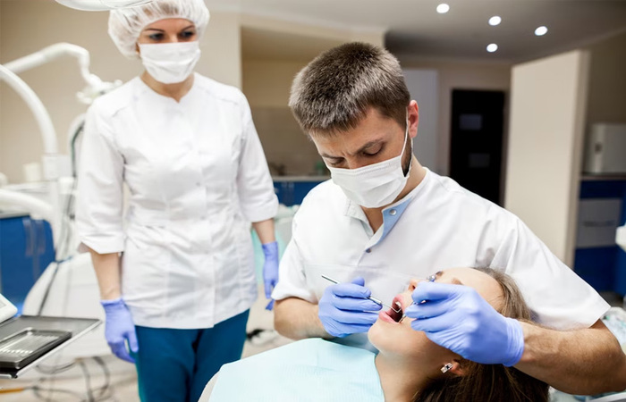
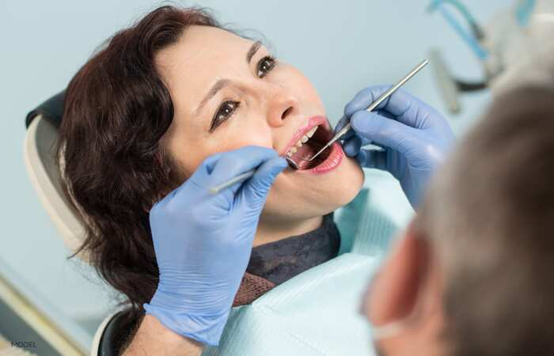
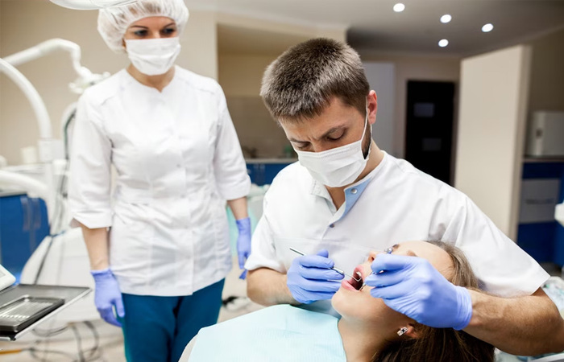
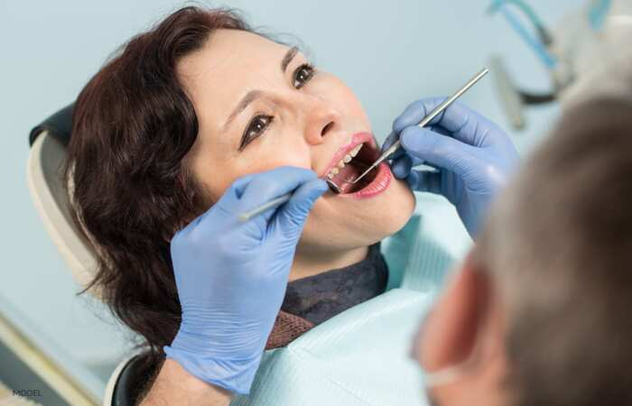
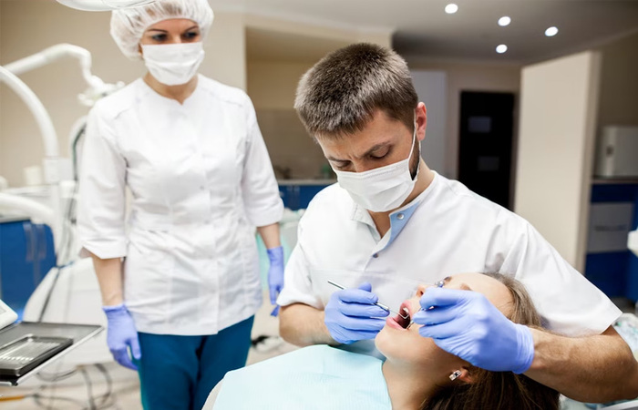
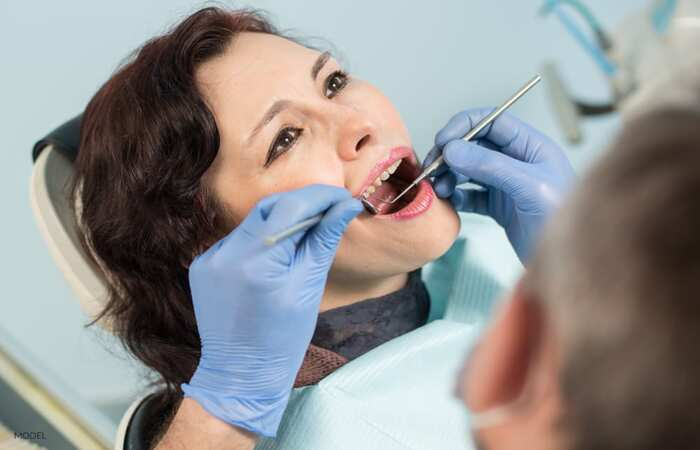

Illia Bekalo
Becoming a dentist was a natural career choice for me as it was a combination of my lifelong interests in both art and science. Since early childhood, I was fascinated with the way the natural world works, and I loved creating things with hands, and using them in general. Not knowing how to combine these tendencies, I was led to choosing dentistry, which was a perfect answer for my dilemma. I began my studies towards my desired career at the wonderful University of California, Riverside (UCR). There, I slowly fulfilled my science requirements to get into dental school, building up the knowledge needed for my future career in dentistry. While learning about biology, chemistry, and physics I was absolutely fascinated by the intricate processes of the natural world. I also joined the Pre-Dental Society, where I met many like minded individuals to share knowledge, ideas, and passions with.
At the same time, I never abandoned my passion for the arts. I sketched, painted, sculpted, and created digital art like there was no tomorrow. It brought me intense joy to express myself through visual mediums. I also knew that the skills I would gain through creating art would also become useful in dentistry. When I finished my time at UCR, I enrolled in the Herman Ostrow School of Dentistry at the University of Southern California (USC), where I embarked on the final path towards my career. USC's awesome dental program was just what I needed to grow as a student and a professional, and become the specialist I always wanted to be. During my time at USC, I spent countless fascinating hours honing my skills as a future dentist, and learning a lot through coursework in dental anatomy, pathology, and patient care. I especially enjoyed all of the interesting techniques of the many aspects of dentistry, and learning how to make people happy with their appearance with creativity. With each day, my passion was solidified through overcoming challenges and succeeding as a student.
After I finished dental school, I began the new step of my career as a general dentist. Equipped with the knowledge gained from my long studies, I embarked on a journey to become the best professional I could be. Regardless of whether I was doing routine cleanings, repairing damaged teeth, or explaining proper oral hygiene to my patients, I enjoyed every second of my job. As of right now, as I am finally working as a general dentist, I rejoice in helping others while also exercising my strengths and passions in arts and science. Dentistry allowed me to do what I love, improve the lives of others, and be good at what I do thanks to my job also being my passion.
Experience
Dental Assistant
• Assisted dentists at Western Dental
• Helped during dental procedures
• Maintained the office
Dental Office Manager
• Managed dental assistants at a private clinic
• Attended to documents and other office matters
• Talked to patients and assisted the dentist
Dentist
• Ran dental procedures on patients
• Diagnosed oral diseases and illnesses
• Managed my private office
• Performed oral surgery
Education
UC Riverside
University of Southern California
Portfolio
 




